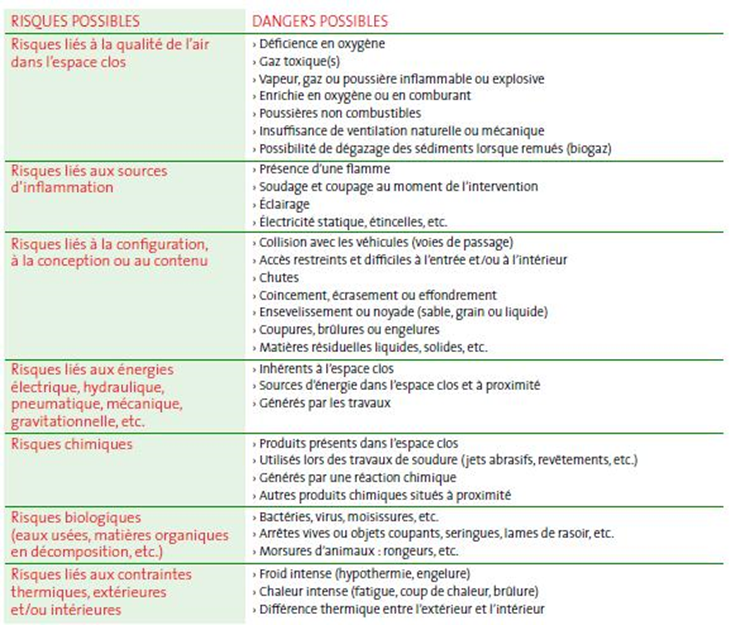
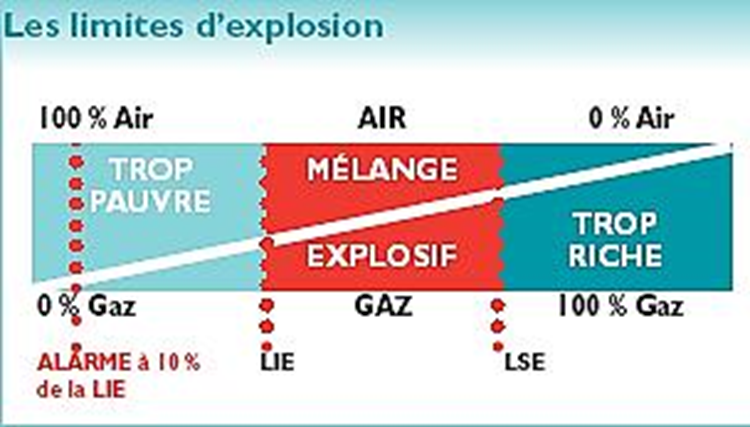
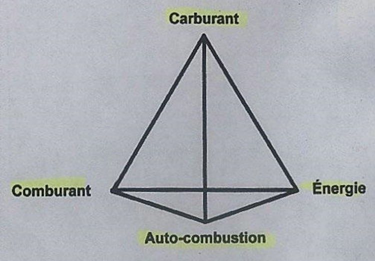
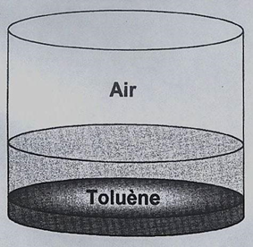
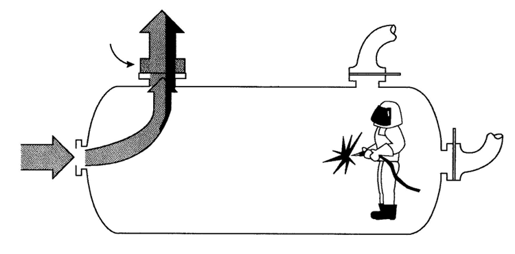
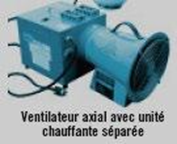
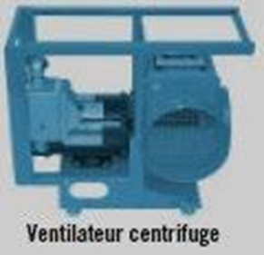
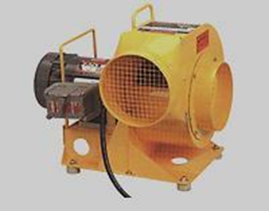
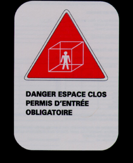
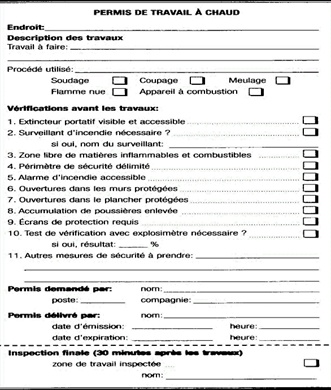

Espaces clos
Près de 40 Québécois subissent chaque année des accidents graves ou mortels en espace clos, souvent par déficience en O2 ou présence de gaz toxiques. Les articles 296.1 à 312 du RSST encadrent la gestion : permis d'entrée, surveillance, plan de sauvetage et programme d'intervention obligatoires. En mine, les silos à minerai, les réservoirs de procédé, les conduits de ventilation et certains chantiers borgnes sont des espaces clos typiques.
Table des matières
- Définition
- Dangers spécifiques
- Articles RSST clés
- Mesures de contrôle
- Programme d'intervention en 8 étapes
- Permis d'entrée et surveillance
- Application terrain
Définition
Selon l'article 1 du RSST, un espace clos est un espace totalement ou partiellement fermé (réservoir, silo, cuve, trémie, fosse, égout, tuyau, cheminée, puits, citerne, pale d'éolienne) qui présente, en raison du confinement, au moins un des risques suivants
- Asphyxie, intoxication, perte de conscience, incendie ou explosion (atmosphère ou T° interne).
- Ensevelissement.
- Noyade ou entraînement par un liquide.
Dangers spécifiques
Les dangers en espace clos sont multiples et interagissent.
{kind=link}

Toucher l'image pour l'agrandirAtmosphériques
| Risque | Description |
|---|---|
| Déficience en O2 (< 20,5 %) | Combustion, décomposition, oxydation, purge avec gaz inerte (azote, argon) |
| Surplus d'O2 (> 23 %) | Augmente l'inflammabilité, fuite de bonbonne |
| Gaz inflammables | LIE ; doit rester < 5 % de la LIE |
| Gaz toxiques | CO (asphyxie chimique), H2S (paralyse l'odorat), NO2, etc. |
| Aérosols, poussières combustibles | Risque d'explosion |
Un milieu enrichi en O2 voit son inflammabilité augmenter fortement.
{kind=link}

Toucher l'image pour l'agrandirLe tétraèdre du feu rappelle les 4 éléments nécessaires à la combustion.
{kind=link}

Toucher l'image pour l'agrandirVoir Gaz et vapeurs pour les densités de vapeur et la chimie.
Effets de la déficience en O2
| % O2 | Effets |
|---|---|
| 20,5 - 23 | Plage acceptable |
| 16 | Difficulté à respirer, jugement diminué |
| 12 | Évanouissement, décès rapide |
| 6 | Décès en quelques secondes |
Exemple H2S
| ppm | Effet |
|---|---|
| 0,2 | Seuil olfactif |
| 10 | VEMP |
| 100-150 | Paralysie de l'odorat |
| 400 | Décès en 30 min - 4 h |
| 1000 | Décès instantané |
La densité de vapeur conditionne où s'accumulent les gaz.
{kind=link}

Toucher l'image pour l'agrandirAutres dangers
- Biologiques (voir Bioaérosols).
- Physiques : T° (voir Prévention de la contrainte thermique en mine), rayonnements, bruit, vibrations.
- Mécaniques, électriques, ensevelissement, noyade, chute, claustrophobie.
Articles RSST clés
| Art. | Disposition |
|---|---|
| 296.1 | Champ d'application |
| 297 | Définitions (personne qualifiée, travail à chaud) |
| 297.1 | Aménagement d'un nouvel espace clos |
| 298 | Travailleurs habilités |
| 299 | Interdiction d'entrer |
| 300 | Cueillette de renseignements et moyens de prévention |
| 301 | Information des travailleurs |
| 302 | Ventilation, O2 entre 20,5-23 %, gaz inflammable < 5 % LIE, annexe I respectée |
| 303 | Poussières combustibles |
| 304 | Travail à chaud (ventilation, relevé continu gaz inflammables) |
| 306 | Méthode et fréquence des relevés |
| 307 | Registre des relevés |
| 308 | Surveillance (visuelle/auditive, surveillant à l'extérieur) |
| 308.1 | Situation imprévue, ordonner l'évacuation |
| 309 | Plan de sauvetage (équipements, formation, exercices) |
| 310 | Accès sans obstruction |
| 311 | Matières solides à écoulement libre |
| 312 | Matières liquides |
CSTC : section 3.21, articles 3.21.1 à 3.21.6 (chantiers).
Mesures de contrôle
Hiérarchie
- Éliminer l'espace clos quand possible (téléopération, modification de procédé).
- Ventilation
- Naturelle (effet de cheminée, vent).
- Générale mécanique (dilution).
- Aspiration locale (bras de captation).
- NIOSH recommande > 20 changements d'air/h.
- Purge : vider l'atmosphère, remplacer par air sain. APSAM suggère 7,5 CA/H.
Situation type à éviter lors d'une purge mal séquencée.
{kind=link}

Toucher l'image pour l'agrandir- Moyens administratifs : permis, procédures, formation, communication.
- EPI : adapté aux contaminants présents.
Choix du ventilateur
Trois types principaux : axial, centrifuge, antidéflagrant.
{kind=link}

Toucher l'image pour l'agrandir{kind=link}

Toucher l'image pour l'agrandir{kind=link}

Toucher l'image pour l'agrandirCritères : type de ventilation, capacité, longueur des conduits, protection antidéflagrante, type de travaux, provenance de l'air.
Programme d'intervention en 8 étapes
- Désigner et former une personne responsable qualifiée.
- Identifier les espaces clos et les risques (fiches d'évaluation).
{kind=link}

Toucher l'image pour l'agrandir- Élaborer une procédure de travail écrite (détection, ventilation, cadenassage, permis).
- Sélectionner et préparer les instruments (étalonnage, bump test, alarmes).
- Acquérir le matériel : équipements de sécurité, EPI, sauvetage, communication.
- Établir un plan de sauvetage (art. 309) avec équipe, harnais, exercices.
- Former et informer toutes les personnes concernées.
- Assurer suivi et mise à jour.
Permis d'entrée et surveillance
Permis d'entrée
- Émis par une personne qualifiée.
- Affiché près de l'entrée durant les travaux.
- Valide pour un quart ; nouveau permis si la nature des travaux change.
- Évaluation atmosphérique préalable : O2 (20,5-23 %), gaz combustibles (< 5 % LIE), autres agresseurs (CO, NO2, H2S, solvants).
- Évaluation en continu durant les travaux.
Le travail à chaud exige un permis spécifique additionnel.
{kind=link}

Toucher l'image pour l'agrandirSurveillant (obligatoire)
- Personne qualifiée demeurant à l'extérieur.
- Contact visuel, auditif ou autre moyen avec le travailleur.
- Déclenche les procédures de sauvetage si nécessaire.
- Ne peut entrer pour secourir (risque de devenir une victime).
Application terrain
Espaces clos typiques en mine
| Espace clos | Risques dominants |
|---|---|
| Silos à minerai (concentrateur) | Ensevelissement, poussière, atmosphère |
| Réservoirs de procédé (lixiviation, flottation) | Atmosphère toxique, T°, résidus chimiques |
| Conduits de ventilation principale | Atmosphère, hauteur, chute |
| Décanteurs et bassins | Bioaérosols, H2S, noyade |
| Chantiers borgnes en attente de ventilation auxiliaire | CO, NO2, O2 |
| Cuves de procédé sous vide ou pression | Atmosphère, dépressurisation |
| Puits abandonnés ou désaffectés | Tous risques cumulés |
Particularité minière : un chantier souterrain en cul-de-sac avec ventilation auxiliaire défaillante peut, fonctionnellement, devenir un espace clos sans en avoir l'apparence. La procédure de travail doit prévoir ce basculement.
Ressources
| Document | Type | Source |
|---|---|---|
| art-296.1-RSST : champ d'application (espace clos) à 312 | Règlement | LégisQuébec |
| Guides espaces clos (fiches 17, 18, 32) | Guides | APSAM |
| Permis d'entrée modèle | Gabarit | À développer en interne |
| Plan de sauvetage modèle | Gabarit | À développer en interne |
Articles wiki connexes
Pages qui pointent ici (20)
- 🎯 Démarrage rapide, conseiller SST Sécurité industrielle
- 🎯 Démarrage rapide, direction et RH Sécurité industrielle
- 🎯 Démarrage rapide, superviseur Sécurité industrielle
- 🎯 Démarrage rapide, travailleur Sécurité industrielle
- 🏠 Wiki Sécurité industrielle, mines Sécurité industrielle
- 👷 Wiki Sécurité industrielle mines - Travailleurs Sécurité industrielle
- Analyse de risques Sécurité industrielle
- Appréciation du risque, méthodes Sécurité industrielle
- art-1-RSST Sécurité industrielle
- art-133-RSST Sécurité industrielle
- art-296.1-RSST Sécurité industrielle
- art-300-RSST Sécurité industrielle
- art-309-RSST Sécurité industrielle
- Équipements de protection Sécurité industrielle
- Gestion des risques en entreprise Sécurité industrielle
- Hiérarchie des moyens de prévention Sécurité industrielle
- Risques mécaniques et opérations Sécurité industrielle
- Risques sectoriels et bonnes pratiques Sécurité industrielle
- Sécurité industrielle Sécurité industrielle
- Sécurité machines Sécurité industrielle